Connect the world.
Source Photos
Two sets of overlapping photos: outdoor (4) and kitchen (3).
Outdoor
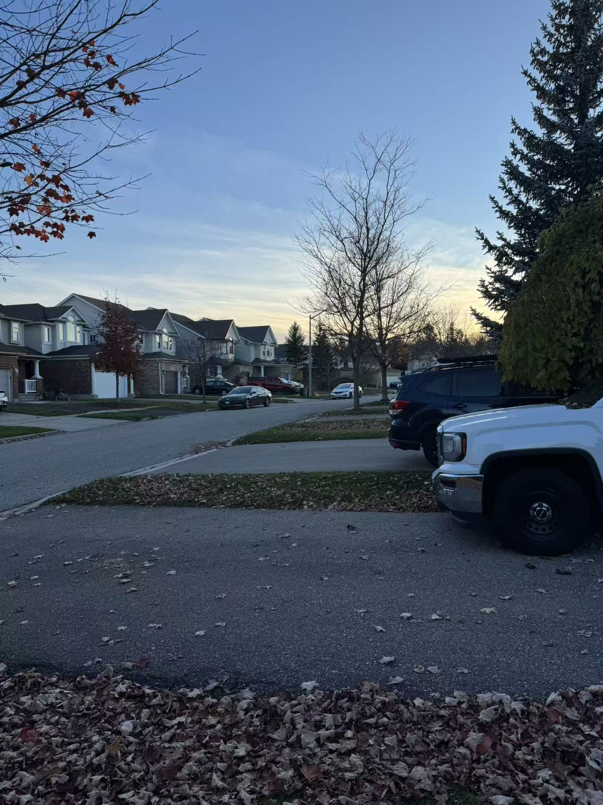
This is the link to the startup company. Welcome to visit!
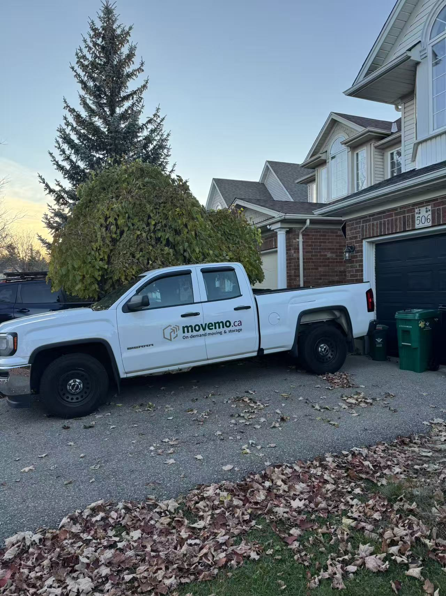
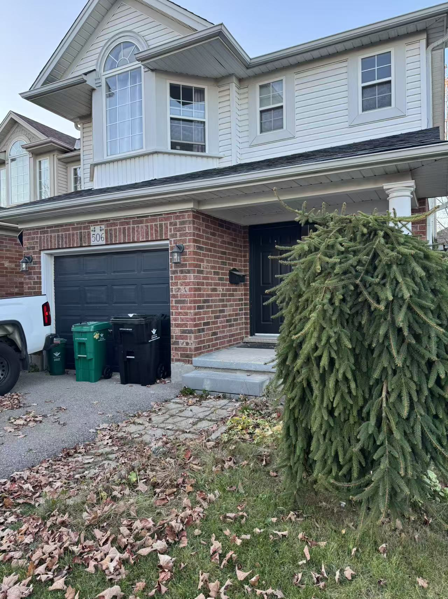
Kitchen
Recover Homographies
I marked 8–9 corresponding points for each image pair and used least squares to calculate H. It maps the first image to the second.
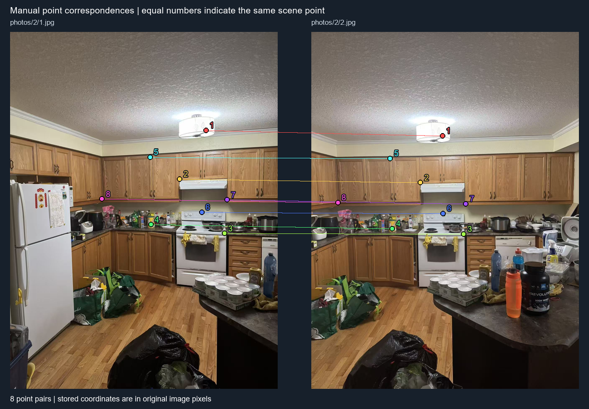
Recovered H
This is the H for the current image pair. Switch image pairs to see a different H.
[ 1.301490e+00 2.017097e-02 -4.507249e+02 ] [ 2.193282e-01 1.141861e+00 -1.284548e+02 ] [ 2.741538e-04 -4.864324e-05 1.000000e+00 ]
System of equations
Set h33 = 1 to fix the scaling factor. For each (x, y) in the left picture and the corresponding (u, v) in the right picture, we can get the following equations:
Remove the denominators to get the following matrix:
[ x y 1 0 0 0 -ux -uy ] h = u [ 0 0 0 x y 1 -vx -vy ] h = v h = [h11 h12 h13 h21 h22 h23 h31 h32]ᵀ
Since hand-marked points are not 100% precise for mapping, we use least squares to find the solution that best fits these points overall.
Numerical A h = b for the selected pair
[ 935.512 469.829 1 0 0 0 -585952.3 -294274.6 626.344 ] [ 0 0 0 935.512 469.829 1 -464146.8 -233101.9 496.142 ] [ 810.529 703.35 1 0 0 0 -422362.6 -366512.2 521.095 ] [ 0 0 0 810.529 703.35 1 -583414.7 -506267.8 719.795 ] [ 1024.315 963.182 1 0 0 0 -746011.7 -701488.3 728.303 ] [ 0 0 0 1024.315 963.182 1 -989970.7 -930887.5 966.471 ] [ 672.39 920.425 1 0 0 0 -259707.9 -355510.5 386.246 ] [ 0 0 0 672.39 920.425 1 -632153.5 -865345.8 940.159 ] [ 669.101 598.101 1 0 0 0 -251835.6 -225112.7 376.379 ] [ 0 0 0 669.101 598.101 1 -404591.3 -361659.1 604.679 ] [ 915.777 861.223 1 0 0 0 -576603.4 -542254.4 629.633 ] [ 0 0 0 915.777 861.223 1 -794712.2 -747370.2 867.801 ] [ 1037.471 802.02 1 0 0 0 -765831 -592027.9 738.171 ] [ 0 0 0 1037.471 802.02 1 -852545.9 -659063.1 821.754 ] [ 438.87 798.731 1 0 0 0 -55478.87 -100970 126.413 ] [ 0 0 0 438.87 798.731 1 -357756.3 -651106.3 815.176 ]Download equations (CSV)
Core code
def computeH(im1_pts, im2_pts):
A, b = build_linear_system(im1_pts, im2_pts)
scales = np.linalg.norm(A, axis=0)
scales[scales == 0] = 1.0
z, _, rank, _ = np.linalg.lstsq(A / scales, b, rcond=None)
h = z / scales
return np.append(h, 1.0).reshape(3, 3)Full source · H and point errors
Results
| Pair | Points | RMSE (px) | Max error (px) |
|---|---|---|---|
| Outdoor 1 → 2 | 8 | 12.37 | 20.60 |
| Outdoor 2 → 3 | 8 | 7.28 | 10.32 |
| Outdoor 3 → 4 | 9 | 8.04 | 13.60 |
| Kitchen 1 → 2 | 8 | 4.19 | 7.44 |
| Kitchen 2 → 3 | 8 | 18.28 | 37.03 |
Errors are measured on the marked points at the original resolution. Kitchen 2 → 3 has the largest error; point 8 should be checked.
Image Warping
I select four corners of a rectangular object and use computeH() to map them to a rectangle. For each output pixel, I use H⁻¹ to find its position in the original image.
Window
Full photo: original · marked corners. 4× pixel detail: nearest / bilinear. H and coordinates.
Kitchen cabinets
Full photo: original · marked corners. 4× pixel detail: nearest / bilinear. H and coordinates.
Suppose the position found in the original image is (100.1, 50.9). For nearest-neighbor interpolation, we choose the nearest pixel, (100, 51). For bilinear interpolation, we use the four surrounding pixels to calculate a weighted value:
I(x, y) is the color at pixel (x, y). The four weights are (1 − dx)(1 − dy), dx(1 − dy), (1 − dx)dy, and dxdy.
The target rectangle proportions are chosen for display; the physical dimensions were not measured. The original crops show the selected corners. Click any image to enlarge it.
Core interpolation
x0, y0 = np.floor(x).astype(int), np.floor(y).astype(int)
x1, y1 = np.minimum(x0 + 1, width - 1), np.minimum(y0 + 1, height - 1)
dx, dy = x - x0, y - y0
nearest = im[np.floor(y + 0.5).astype(int), np.floor(x + 0.5).astype(int)]
bilinear = ((1-dx)*(1-dy)*im[y0, x0]
+ dx*(1-dy)*im[y0, x1]
+ (1-dx)*dy*im[y1, x0]
+ dx*dy*im[y1, x1])Pixels outside the source image are marked invalid in a separate mask. Full source · Selected corners
Speed & quality
| Example | Output (W × H) | Nearest / ms | Bilinear / ms |
|---|---|---|---|
| Window | 360 × 640 | 7.960 | 31.596 |
| Kitchen cabinets | 840 × 400 | 11.638 | 44.146 |
Median of 7 runs after one warm-up per method; image I/O and H estimation are excluded. Both methods use the same output canvas. Timing data
Nearest neighbor copies one pixel and produces visible pixel steps when enlarged. Bilinear uses four pixels, making edges smoother but softer. The table shows the measured speed difference.
Mosaics
I reuse the manually marked points from A.2 and warp the images into one reference view using bilinear interpolation. I project all image corners to find a shared canvas, then blend the overlapping pixels with feather weights.
Outdoor 1 + 2
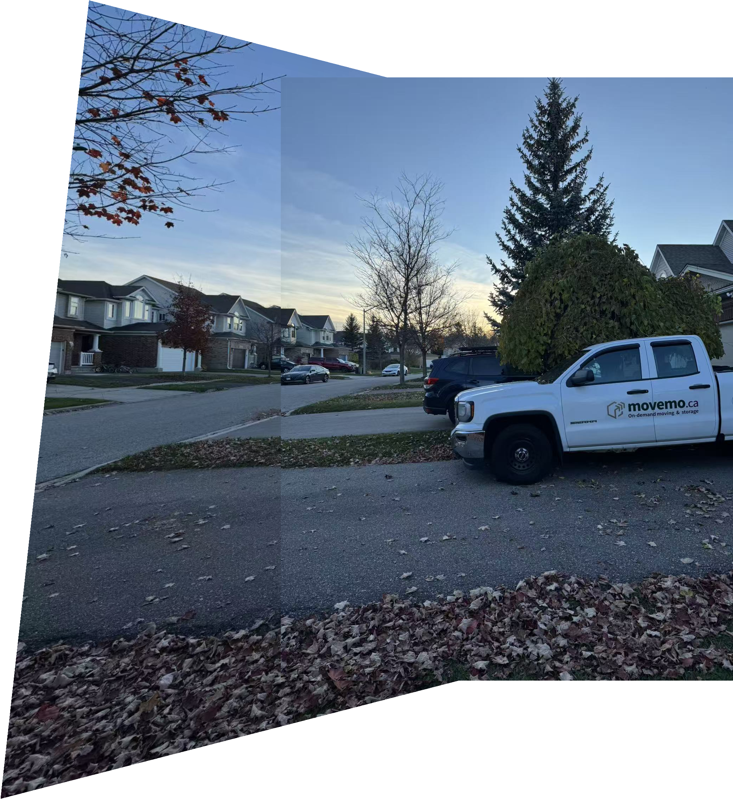
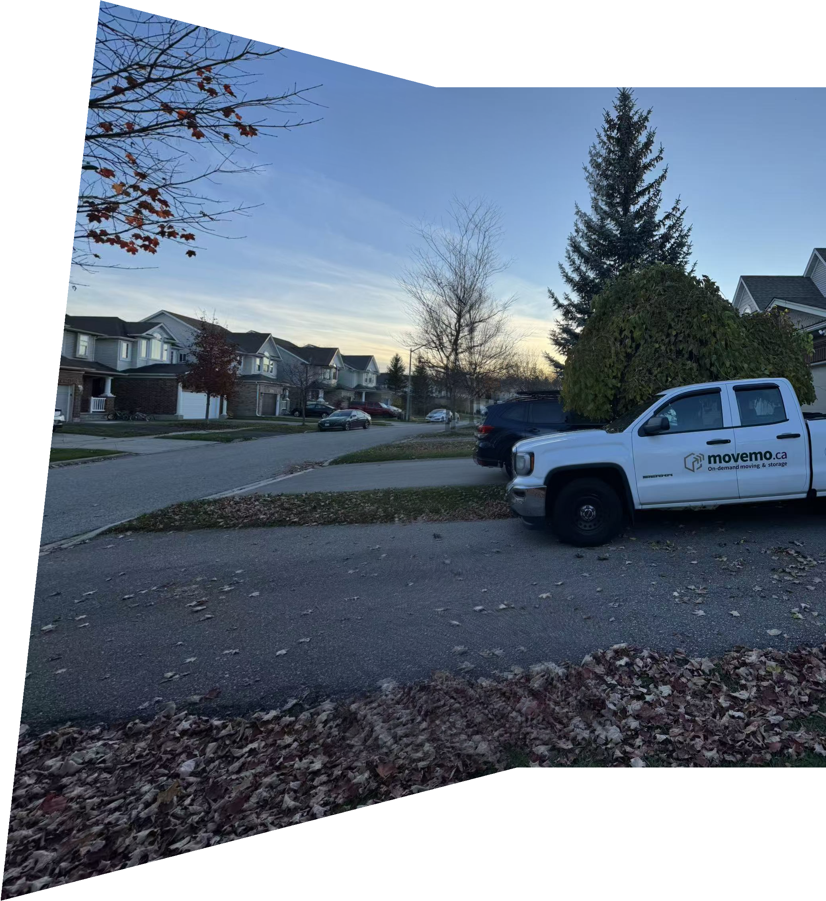
Reference: image 2. Full-resolution mosaic · H matrices and canvas · Cropped version ↓
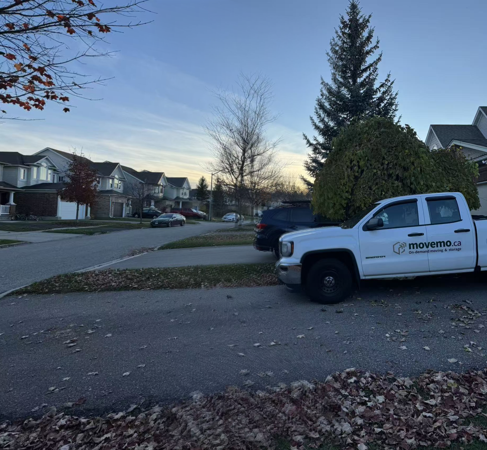
Same H, canvas, and 1847 × 1707 crop. Full Laplacian mosaic.
Outdoor 3 + 4
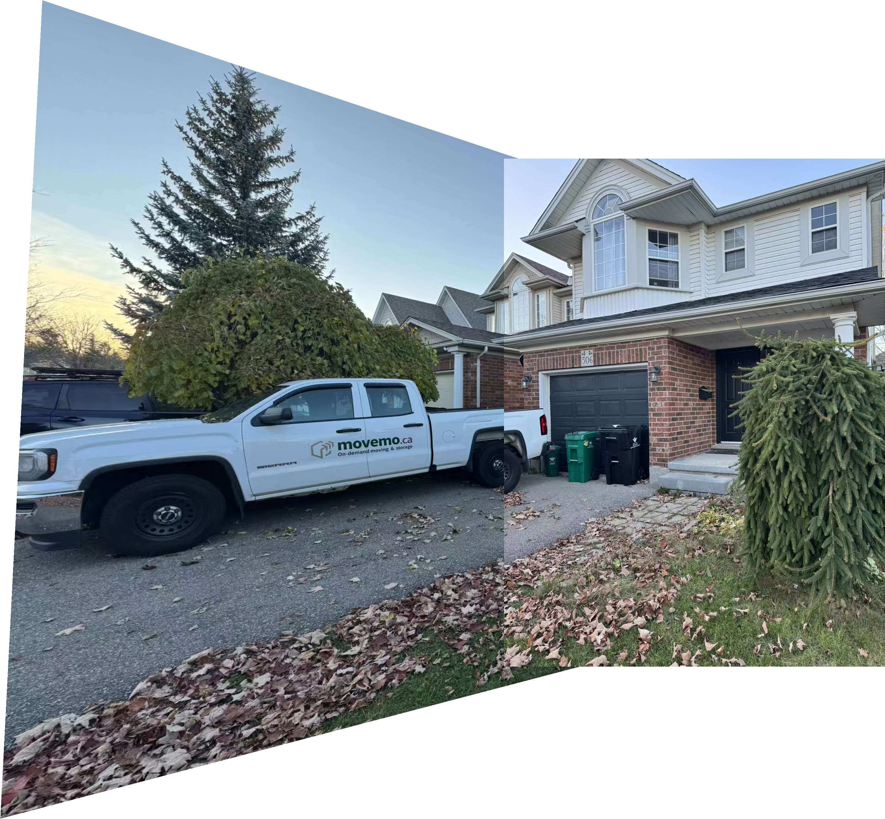
Reference: image 4. Full-resolution mosaic · H matrices and canvas · Cropped version ↓

Same H, canvas, and 2858 × 1707 crop. Full Laplacian mosaic.
Close-up comparison
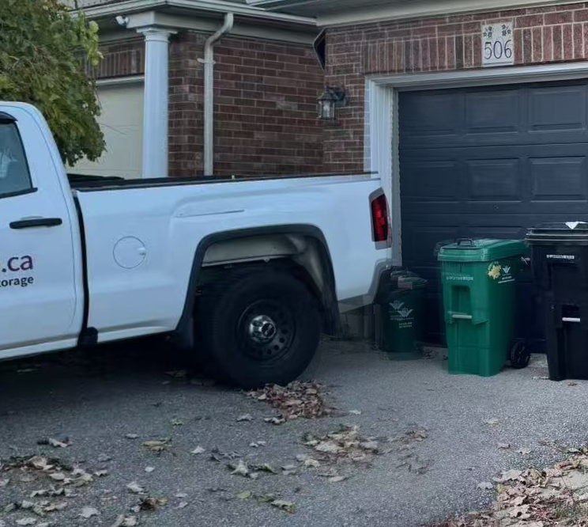
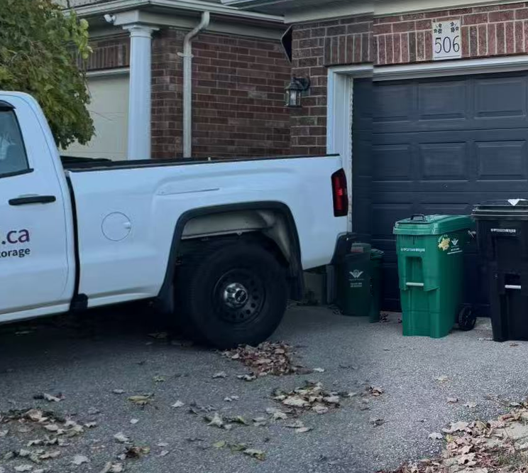
Kitchen 1 + 2 + 3
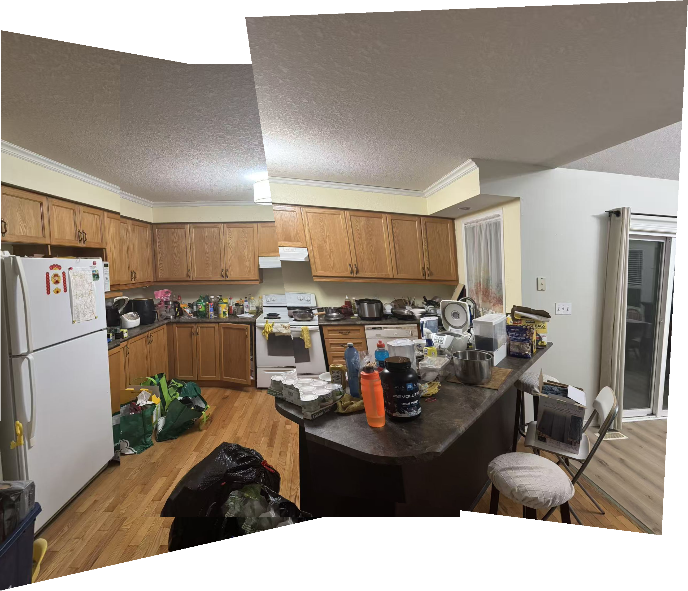
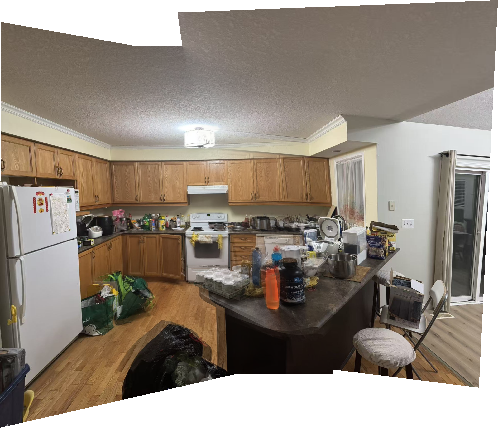
Reference: image 2. Full-resolution mosaic · H matrices and canvas · Cropped version ↓
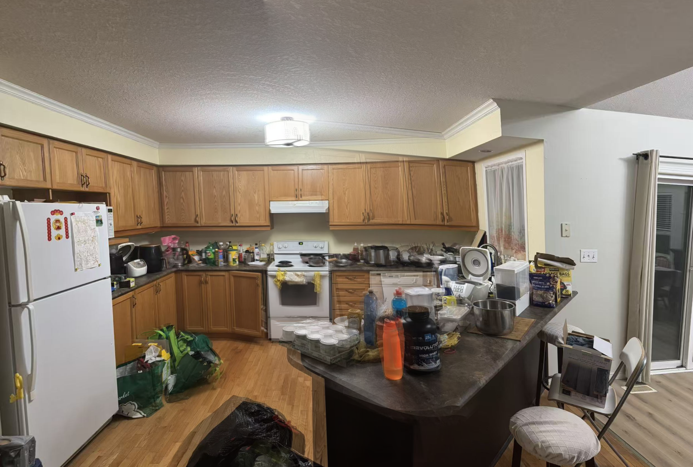

Same H, canvas, and 2495 × 1682 crop. Full Laplacian mosaic.
Close-up comparison
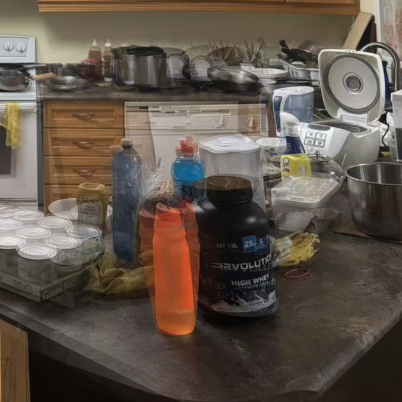
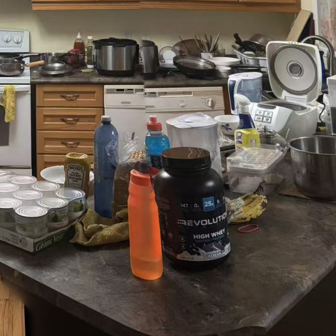
Laplacian pyramid comparison
I also try a six-level Laplacian pyramid. I select the image with the largest feather weight at each pixel, then build Gaussian pyramids of these selection masks and Laplacian pyramids of the images. I blend each level and reconstruct the result. The finest level selects details from one image, while coarser levels blend across a wider region. Both methods use the same H matrices, bilinear warping, canvas, and crop.
The pyramid filters, downsampling, upsampling, and reconstruction are implemented in NumPy. No exposure correction or new alignment is applied. Pyramid source · Burt & Adelson, 1983
The kitchen bottles and countertop details show less ghosting with the pyramid blend. Misaligned edges can still break at the selection boundary, and the outdoor brightness difference remains visible. The change improves some local details but does not fix the original alignment.
Weighted blending
Each source image has larger weights near its center and smaller weights near its edges. I warp the weights with the image and calculate:
Ii and wi are the warped color and weight of image i. Source weights use the distance to the nearest border, normalized to 1 at the center. A one-pixel floor keeps border pixels valid. Outside each image, the weight is 0; uncovered canvas pixels are transparent.
Core code
for source, H in zip(sources, homographies):
source_with_alpha = np.dstack((source.astype(np.float32), feather_weights(source.shape)))
warped, valid = warpImageBilinear(source_with_alpha, H, (height, width),
origin=origin, return_mask=True)
weight = np.where(valid, warped[..., 3], 0)
color_sum += warped[..., :3] * weight[..., None]
weight_sum += weight
np.divide(color_sum, weight_sum[..., None], out=color_sum,
where=weight_sum[..., None] > 0)Blending source · Generation script · Result data
| Mosaic | Images | Output (W × H) | Overlap* |
|---|---|---|---|
| Outdoor 1 + 2 | 2 | 2075 × 2261 | 35.9% |
| Outdoor 3 + 4 | 2 | 2973 × 2752 | 9.5% |
| Kitchen 1 + 2 + 3 | 3 | 2594 × 2228 | 44.0% |
*Pixels covered by at least two images, as a percentage of all valid mosaic pixels. These are three mosaics from two scenes: two outdoor pairs and one kitchen sequence.
Procedure: First, I choose Outdoor 1 and Outdoor 2, Outdoor 3 and Outdoor 4, and Kitchen 1, 2, and 3 to create three mosaics. I read the corresponding points marked in A.2 and use the H matrices computed from them. For the first set, I project Outdoor 1 into the view of Outdoor 2. For the second set, I project Outdoor 3 into the view of Outdoor 4. For the third set, I align all images to the view of Kitchen 2. Kitchen 1 uses H1→2, and Kitchen 3 uses H3→2 = H2→3−1. I apply the respective homography matrix H to the four corners of each photograph, then determine the minimum and maximum coordinates among all these corner points. If any coordinates are negative, I apply a global translation to shift everything into the canvas area. These ranges define the width and height of the final canvas. Then, using the method in A.3, I use H−1 for each pixel in the canvas to find its position in the original image and calculate its color using bilinear interpolation. Next, I use feathering: the weight increases toward the center of each photo and decreases toward its edges. Finally, I calculate a weighted average in the overlapping regions.
Feathering makes the image boundaries less abrupt than overwriting. It cannot correct misalignment, since hand marking is not 100% precise, especially in the kitchen, where the colors are more varied. Also, when blending Outdoor 3 and 4, I noticed a difference in brightness. This might be due to changes in backlighting as I rotated the camera and automatic adjustments made by the phone camera when taking the photos.
Then I tried Laplacian pyramid blending. An image is selected based on the original feathering weights to preserve its set of outlines. The selected image regions are blended gradually across the coarser levels of the image pyramid, keeping the transitions between them natural. This resolved some of the ghosting problems, although some misalignment remains.
Automatic Stitching
B.1 Corners · B.2 Descriptors · B.3 Matches · B.4 RANSAC
B.1 Harris Corner Detection & ANMS
I detect Harris corners at a single scale, then implement ANMS to select up to 500 points. I compare the strongest Harris points with the same number of ANMS points. All coordinates use the original image resolution, without subpixel refinement.
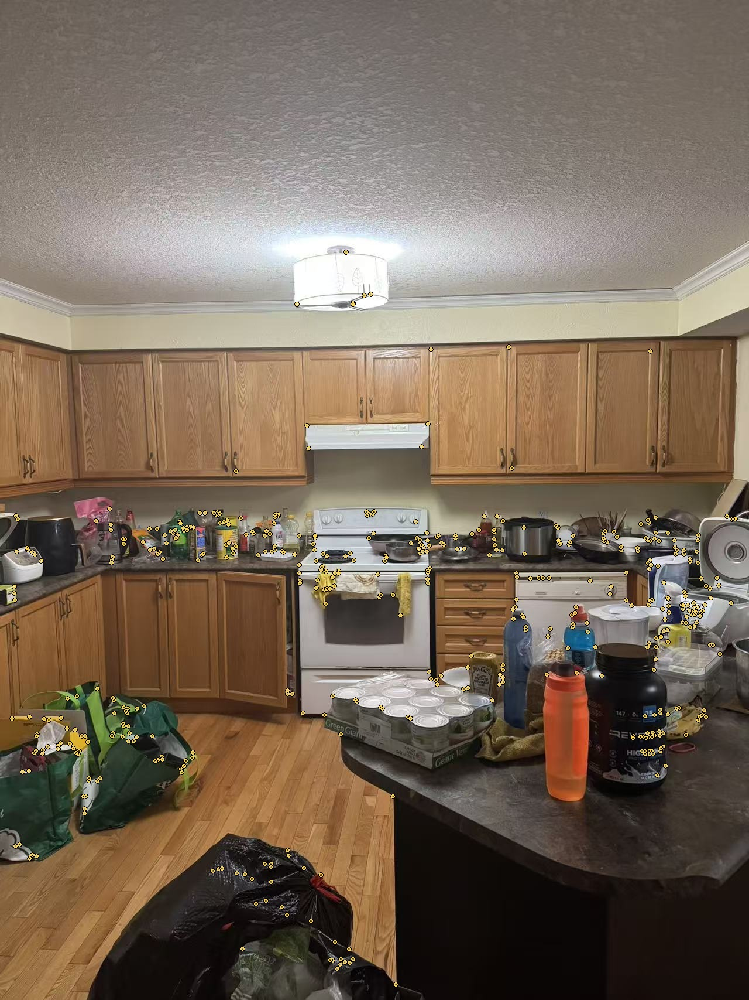
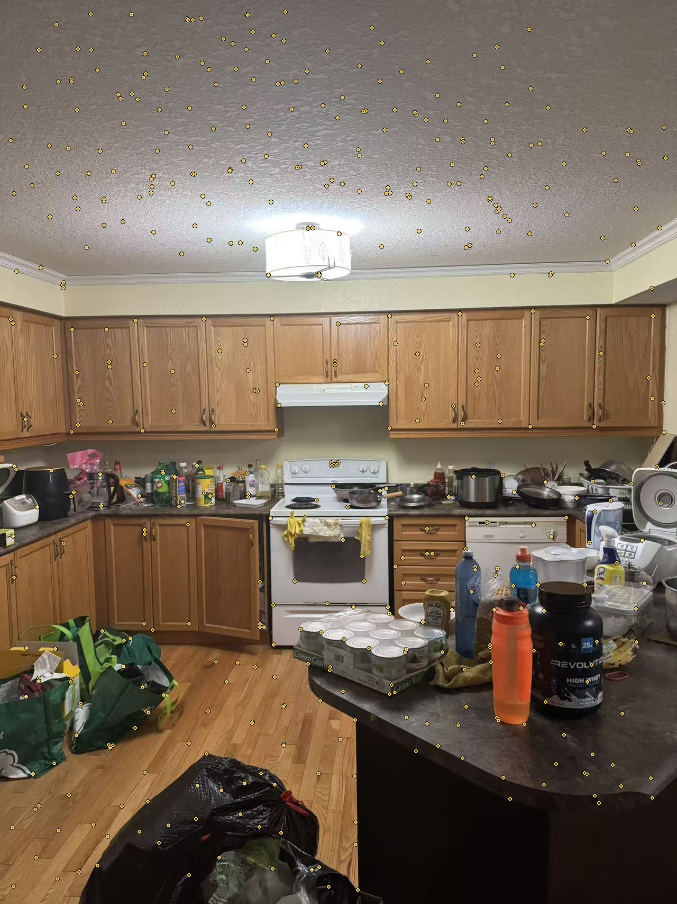
All detected Harris candidates
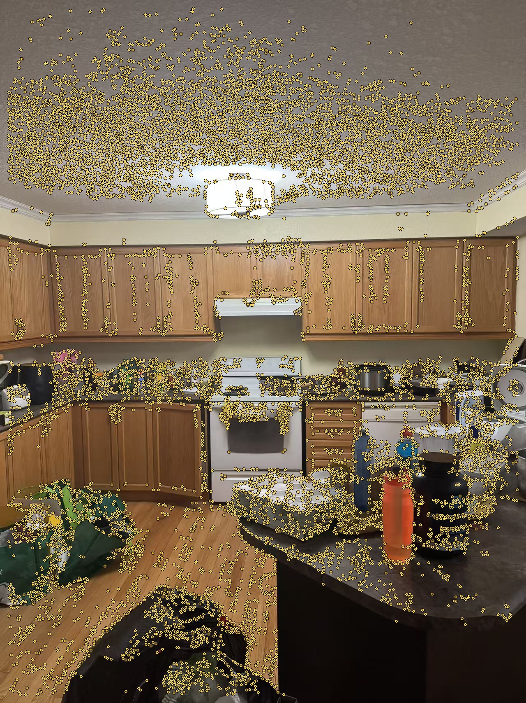
All coordinates (CSV) · Selected points (JSON) · Features (NPZ)
Method
I smooth the grayscale image, calculate its gradients, and form the Harris matrix M from the smoothed gradient products. If the image intensity changes significantly in two directions at a position, it might be a corner. I calculate its score based on Brown et al., Multi-Image Matching using Multi-Scale Oriented Patches, Section 2. I use f = det(M) / trace(M) as the corner strength and keep positive 3 × 3 local maxima above 0.5% of the peak response.
r_i = min_j ||p_i − p_j||, subject to f_i < 0.9 f_j Keep the 500 points with the largest r_i.
A candidate gets a large radius when there is no significantly stronger point nearby. ANMS favors these points, spreading the selection across textured areas. If no sufficiently stronger point exists, the radius is infinite.
Core ANMS code
dx = points[start:stop, 0, None] - points[None, :, 0]
dy = points[start:stop, 1, None] - points[None, :, 1]
distance_squared = dx*dx + dy*dy
stronger = strengths[start:stop, None] < c_robust*strengths[None, :]
distance_squared[~stronger] = np.inf
radii[start:stop] = np.sqrt(distance_squared.min(axis=1))σd = 1.0, σi = 1.5; crobust = 0.9. A 20-pixel border is excluded to leave room for the later 40 × 40 descriptors. Harris and ANMS source · Generation script · Brown et al., sections 2–3
I observed that without ANMS, the selected points tended to concentrate in areas with rich texture. With ANMS, the points were more spread out across the image.
| Image | Candidates | Kept | Top Harris cells* | ANMS cells* |
|---|---|---|---|---|
| Outdoor 1 | 17360 | 500 | 14 | 44 |
| Outdoor 2 | 18622 | 500 | 16 | 42 |
| Outdoor 3 | 18568 | 500 | 32 | 44 |
| Outdoor 4 | 19577 | 500 | 41 | 48 |
| Kitchen 1 | 9880 | 500 | 29 | 48 |
| Kitchen 2 | 10637 | 500 | 26 | 48 |
| Kitchen 3 | 7101 | 500 | 25 | 44 |
*Occupied cells in an 8 × 6 grid (48 cells). Both selections contain the same number of points. ANMS improves spatial coverage, but smooth regions such as the sky still have few corners. Result data
B.2 Feature Descriptor Extraction
I use the ANMS points from B.1. For each point, I smooth the grayscale image and sample its 40 × 40 window into an axis-aligned 8 × 8 patch. I normalize the 64 values to have a mean of 0 and a standard deviation of 1.
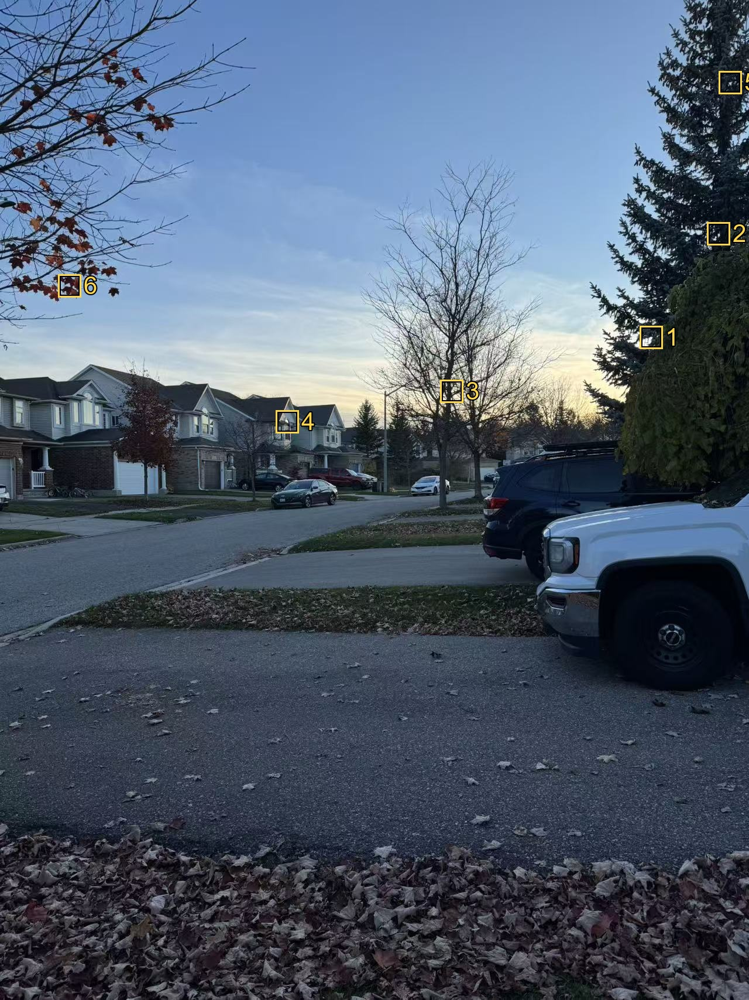
1 (1113, 576)
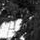
2 (1228, 399)
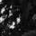
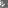
3 (772, 668)
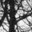
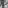
4 (491, 720)
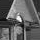
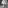
5 (1248, 141)
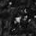
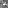
6 (119, 488)
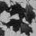
All descriptors (NPZ) · 64-value vectors (CSV) · Example coordinates
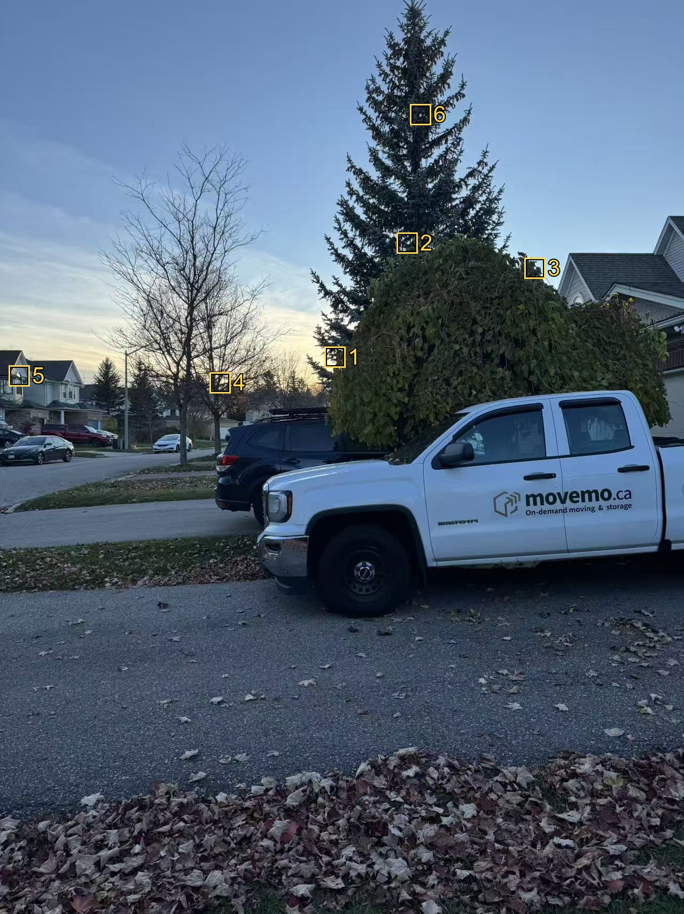
1 (627, 667)
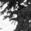
2 (762, 454)
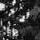
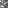
3 (1001, 501)
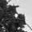
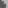
4 (412, 715)
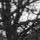
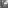
5 (36, 702)
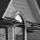
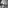
6 (787, 214)
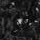
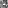
All descriptors (NPZ) · 64-value vectors (CSV) · Example coordinates
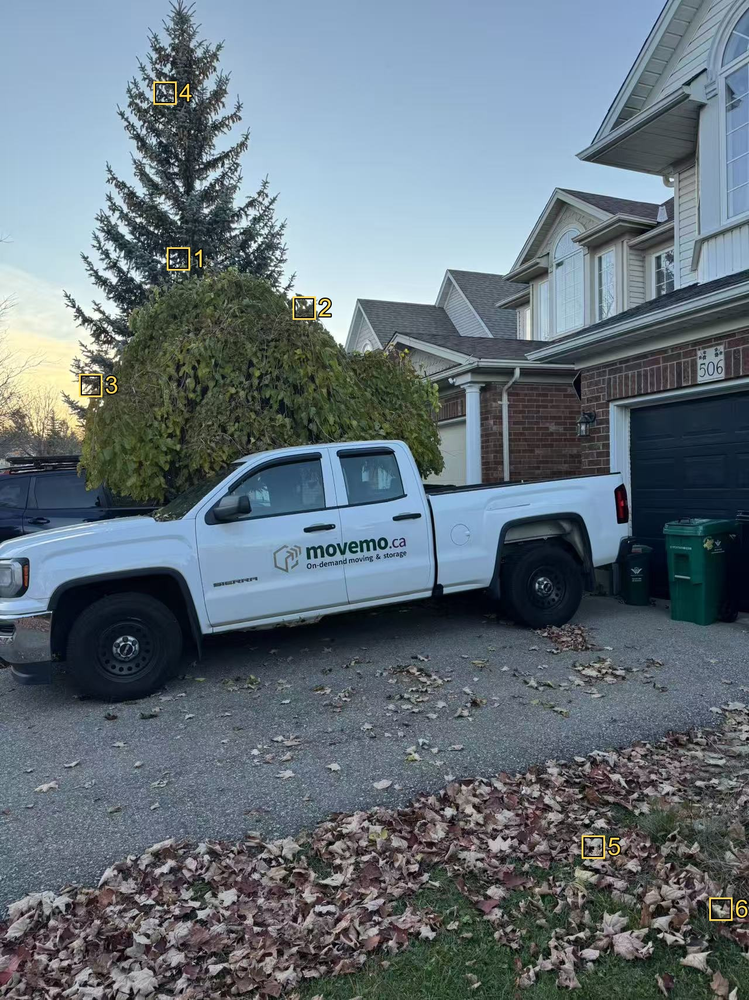
1 (305, 442)
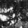
All descriptors (NPZ) · 64-value vectors (CSV) · Example coordinates
All descriptors (NPZ) · 64-value vectors (CSV) · Example coordinates
All descriptors (NPZ) · 64-value vectors (CSV) · Example coordinates
All descriptors (NPZ) · 64-value vectors (CSV) · Example coordinates
All descriptors (NPZ) · 64-value vectors (CSV) · Example coordinates
Each numbered pair shows the unblurred 40 × 40 grayscale crop on the left and the normalized 8 × 8 descriptor on the right. Preview values use a fixed grayscale range [−3, 3]; the saved descriptors retain their signed values without clipping.
Core code
patch40 = blurred[y-20:y+20, x-20:x+20]
patch8 = patch40[2::5, 2::5]
mean, std = patch8.mean(), patch8.std()
if std >= min_std:
descriptor = ((patch8-mean)/std).reshape(64)Gaussian σ = 2 pixels before sampling; one sample every 5 pixels. Incomplete windows and patches with std < 10−6 are skipped. No rotation or Haar transform is used. Extraction source · Generation script · Brown et al., Section 4
| Image | ANMS points | Descriptors × dimensions | Skipped |
|---|---|---|---|
| Outdoor 1 | 500 | 500 × 64 | 0 |
| Outdoor 2 | 500 | 500 × 64 | 0 |
| Outdoor 3 | 500 | 500 × 64 | 0 |
| Outdoor 4 | 500 | 500 × 64 | 0 |
| Kitchen 1 | 500 | 500 × 64 | 0 |
| Kitchen 2 | 500 | 500 × 64 | 0 |
| Kitchen 3 | 500 | 500 × 64 | 0 |
The figures show six examples per image; descriptors are extracted for every valid ANMS point. All saved descriptors have mean ≈ 0 and standard deviation ≈ 1. Normalization checks
B.3 Feature Matching
I compare each 64-value descriptor in the left image with all descriptors in the right image. I find its nearest and second-nearest neighbors and keep the nearest match only when its distance is clearly smaller.
All 131 matches · Match coordinates (CSV) · Matches (NPZ) · All nearest-neighbor tests
All 122 matches · Match coordinates (CSV) · Matches (NPZ) · All nearest-neighbor tests
All 22 matches · Match coordinates (CSV) · Matches (NPZ) · All nearest-neighbor tests
All 163 matches · Match coordinates (CSV) · Matches (NPZ) · All nearest-neighbor tests
All 55 matches · Match coordinates (CSV) · Matches (NPZ) · All nearest-neighbor tests
Nearest-neighbor ratio test
d1 and d2 are the Euclidean distances to the closest and second-closest descriptors. I choose a threshold of 0.7; this corresponds to 0.49 for squared distances, as plotted in Figure 6b of the paper. Two zero-distance neighbors are ambiguous and are rejected.
I also tried a threshold of 0.6, which removed 126 more matches compared with 0.7. Although it is stricter, it may also exclude correct matches, so I keep the threshold at 0.7.
Core code
squared = np.maximum(np.sum(queries*queries, axis=1)[:, None]
+ norm_b[None, :] - 2*queries @ b.T, 0)
order = np.argsort(squared, axis=1, kind="stable")[:, :2]
rows = np.arange(stop-start)
e1, e2 = squared[rows, order[:, 0]], squared[rows, order[:, 1]]
squared_ratio = np.divide(e1, e2, out=np.full_like(e1, np.inf), where=e2 > 1e-12)
ratios[start:stop] = np.sqrt(squared_ratio)
accepted = ratios < ratio_thresholdMatching source · Generation script · Brown et al., Figure 6b and Section 5
| Pair | Matches | Queries retained | Median ratio |
|---|---|---|---|
| Outdoor 1 → 2 | 131 | 26.2% | 0.517 |
| Outdoor 2 → 3 | 122 | 24.4% | 0.475 |
| Outdoor 3 → 4 | 22 | 4.4% | 0.573 |
| Kitchen 1 → 2 | 163 | 32.6% | 0.420 |
| Kitchen 2 → 3 | 55 | 11.0% | 0.532 |
Matching runs from left to right. All retained correspondences are saved at the original resolution. The preview shows up to 40 matches with the smallest ratios; the full figure includes every retained match. Result data
Repeated textures can still produce incorrect matches. These are descriptor-based candidates; B.4 uses RANSAC to check their geometric consistency.
B.4 RANSAC & Automatic Mosaics
I use four-point RANSAC on the B.3 matches. I repeatedly sample four pairs, calculate H, and count matches with a reprojection error below 3 px, where error = ||position predicted by H − B.3 matched position||2. I skip degenerate samples, keep the largest consensus, and refit H using its inliers. The automatic H matrices use only automatically matched points. Then I use the method in A.4 to merge the pictures.
Outdoor 1 + 2
Uncropped
Shared crop


Reference: image 2. Full image: manual / automatic. Automatic feather blend · H matrices and crop coordinates
Outdoor 3 + 4
Uncropped
Shared crop
Reference: image 4. Full image: manual / automatic. Automatic feather blend · H matrices and crop coordinates
Kitchen 1 + 2 + 3
Uncropped
Shared crop
Reference: image 2. Full image: manual / automatic. Automatic feather blend · H matrices and crop coordinates
Both methods use the same original photos, reference view, bilinear warping, and six-level Laplacian blending. Uncropped images show each complete canvas, fitted to its column. The cropped comparisons use identical reference coordinates and the largest rectangle valid in both results.
RANSAC inliers and H matrices
[ 1.414004e+00 -1.194453e-01 -5.461932e+02 ] [ 2.721567e-01 1.278140e+00 -2.341453e+02 ] [ 3.320931e-04 -7.934800e-06 1.000000e+00 ]
Rejected matches · All point errors (CSV) · H and sampling details · RANSAC data (NPZ)
[ 1.640274e+00 -1.257784e-03 -8.322178e+02 ] [ 4.175466e-01 1.402160e+00 -3.123230e+02 ] [ 5.241009e-04 -2.638732e-05 1.000000e+00 ]
Rejected matches · All point errors (CSV) · H and sampling details · RANSAC data (NPZ)
[ 2.202319e+00 -3.086266e-02 -2.030149e+03 ] [ 9.193161e-01 2.033264e+00 -8.879673e+02 ] [ 1.051834e-03 -7.191505e-05 1.000000e+00 ]
Rejected matches · All point errors (CSV) · H and sampling details · RANSAC data (NPZ)
[ 1.349488e+00 9.336234e-03 -4.625513e+02 ] [ 2.289355e-01 1.191830e+00 -1.450342e+02 ] [ 2.902008e-04 -1.794678e-05 1.000000e+00 ]
Rejected matches · All point errors (CSV) · H and sampling details · RANSAC data (NPZ)
[ 1.948078e+00 3.931352e-02 -1.297670e+03 ] [ 5.388117e-01 1.719018e+00 -5.262888e+02 ] [ 6.883215e-04 3.046926e-05 1.000000e+00 ]
Rejected matches · All point errors (CSV) · H and sampling details · RANSAC data (NPZ)
Four-point RANSAC
error_i = ||project(H p_i) − q_i||₂ inlier if error_i < 3 pixels
sample = rng.choice(len(source), 4, replace=False)
H = computeH(source[sample], target[sample])
errors = reprojection_errors(source, target, H)
inliers = errors < threshold_px
score = (int(inliers.sum()), -float(np.sum(errors[inliers]**2)))
if score > best_score:
best_score, best_mask = score, inliers
H = computeH(source[best_mask], target[best_mask])The threshold is measured in original target-image pixels. Sampling uses fixed seeds starting at 671, an adaptive 99.9% confidence estimate, at least 200 valid hypotheses, and at most 5000 draws. After refitting, I recalculate the inliers until the set stabilizes or repeats. Full RANSAC source · Generation script
| Pair | B.3 matches | Inliers | Inlier ratio | Inlier RMSE / px |
|---|---|---|---|---|
| Outdoor 1 → 2 | 131 | 58 | 44.3% | 1.619 |
| Outdoor 2 → 3 | 122 | 48 | 39.3% | 1.445 |
| Outdoor 3 → 4 | 22 | 8 | 36.4% | 1.122 |
| Kitchen 1 → 2 | 163 | 70 | 42.9% | 1.385 |
| Kitchen 2 → 3 | 55 | 21 | 38.2% | 1.357 |
RMSE is measured on the selected inliers, so it does not measure independent alignment accuracy across the whole scene. Result data
Outdoor 3 → 4 has the fewest inliers (8), so its homography is supported by fewer features. RANSAC rejects inconsistent matches, but a single H still cannot align every depth when the photos contain parallax. For example, the roof edge is still misaligned. One possible reason is that I accidentally translated my phone while rotating it to take the pictures. Foundations of Computer Vision, Section 41.3 explains that panorama images should be taken by rotating the camera without translation.
The manual and automatic results are broadly similar for Outdoor 1 + 2. The automatic Outdoor 3 + 4 result shows more foreground stretching. In the kitchen, the alignment between pictures 2 and 3 looks better because the cupboards line up this time. However, a funny thing is that the orange cup seems to have disappeared. This might be because, due to the misalignment, the cup appears in different positions in the two photos, and the blending seam happens to discard the portions of both photos that contain the cup.